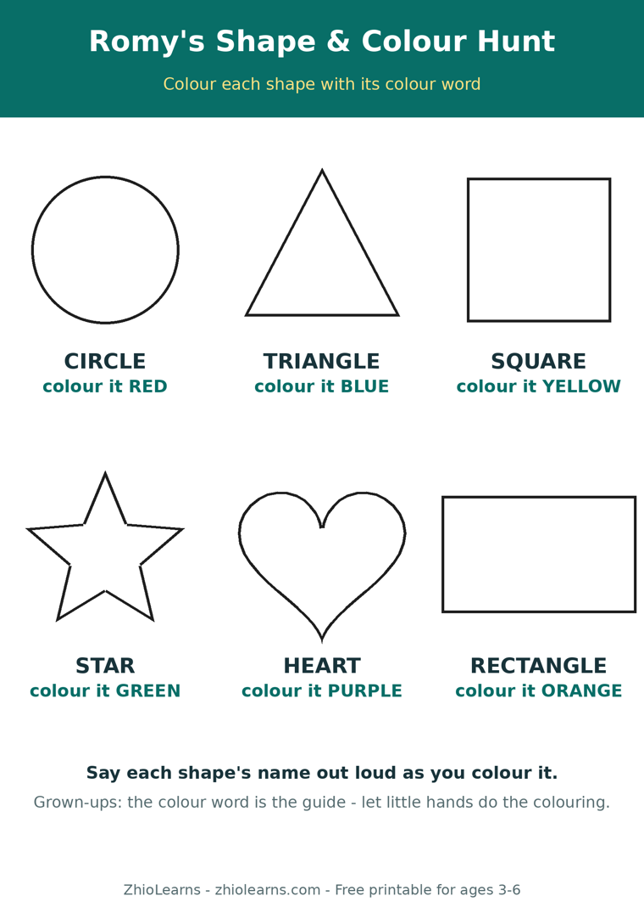

Sort by One Thing at a Time: The Laundry-Basket Lesson in Shapes and Colours
The laundry basket lands on the rug, and you say the most natural sentence in the world: “Can you find all the red socks?” Your three-year-old digs happily, pulls out a blue sock, a red shirt, and a washcloth, and wanders off to put the washcloth on the cat.
It is tempting to read that as “doesn’t know red yet.” Almost always, that is not what happened. What happened is simpler, and kinder: you asked for two jobs at once, and a three-year-old brain can only hold one of them.
Red and round is two jobs, not one
To find “all the red round things,” a child has to run a little checklist on every single object: What colour is it? What shape is it? Both answers have to be yes before it goes in the pile. Adults do this without noticing. For a two- to four-year-old, holding two rules in mind while also scanning, reaching, and deciding is a genuinely heavy lift — researchers call it working memory, parents call it Tuesday.
So the child does what any sensible person does with an overloaded checklist: they keep the rule that caught their eye — usually colour, because it shouts loudest — and quietly drop the other one. The knowledge was there. The sorting system was just too small for two rules at once. The fix is not more practice. It is a smaller job.
One rule, one pile, one win
Split the job in half, and sorting suddenly works. First pass, colour only — shape does not matter at all:
“All the blue ones in this pile. Any blue thing. Go!”
“That sock is blue and stripy — still blue. In it goes.”
Another day, shape only — colour does not matter at all:
“Round things on this cushion. Buttons, lids, balls — if it’s round, it lives here.”
One rule means every decision is easy, the pile grows fast, and the game ends in success instead of correction. And something quieter is happening underneath: your child is learning to choose a rule and stick to it — to look at the same sock and see, on purpose, only its colour today and only its shape tomorrow. Teachers call that classification and flexible thinking. It is the skill underneath sorting shapes this year, and underneath grouping words and numbers in a few years’ time.
Wait for the self-started pile
Keep the one-rule game small and frequent — a sock basket, a button jar, the cutlery drawer with the big spoons and little spoons. Then, one ordinary day, watch for the moment your child starts a pile without being asked: the red cars lined up, the round crackers separated from the square ones. That self-started pile is the real milestone. It means the rule now lives in their head, ready to use — and the two-rule version, “red and round,” will arrive on its own a few months later, without a single flashcard.
Two things to skip while you wait: sorting the whole basket (ten objects is plenty), and re-sorting their pile “properly” afterwards. A pile sorted by a rule you didn’t guess is not a wrong pile — ask them what the rule was. You will be surprised how often there is one.
A first shapes book that keeps one idea per page
Romy’s Shape & Color Adventure was built on exactly this one-thing-at-a-time idea. For ages 2–4, each bright page pairs one shape or one colour with objects from a toddler’s real world, so your child can point, name it, and then go hunting for “another red one!” around the house long after the book is closed. Shapes and colours are the very first things little ones learn to name — this book simply gives them one clear rule at a time to name them by.
Read a few pages together tonight. Then try the free printable below tomorrow: colour the shapes by their colour words first — one rule — and only then go hunting for the real shapes hiding in your own home.
🖨️ Free printable: Romy’s Shape & Colour Hunt

Colour six big shapes by their colour words, then hunt for real shapes at home and tick them off. Two pages, ages 3–6, free, no sign-up needed to print it.
Download the free printable (PDF)📚 Today’s book
Find Romy’s Shape & Color Adventure and Romy’s other books in our little shop — and read Romy’s Alphabet Picnic free in the Storytime section.
See Romy’s books →🌿 More from the Parent Corner
Why does your child count the apples perfectly — then start all over again when you ask “how many?” Our previous article explains the recount, and the hiding game that helps it click.
How Many? Why Your Child Counts It All Over Again →